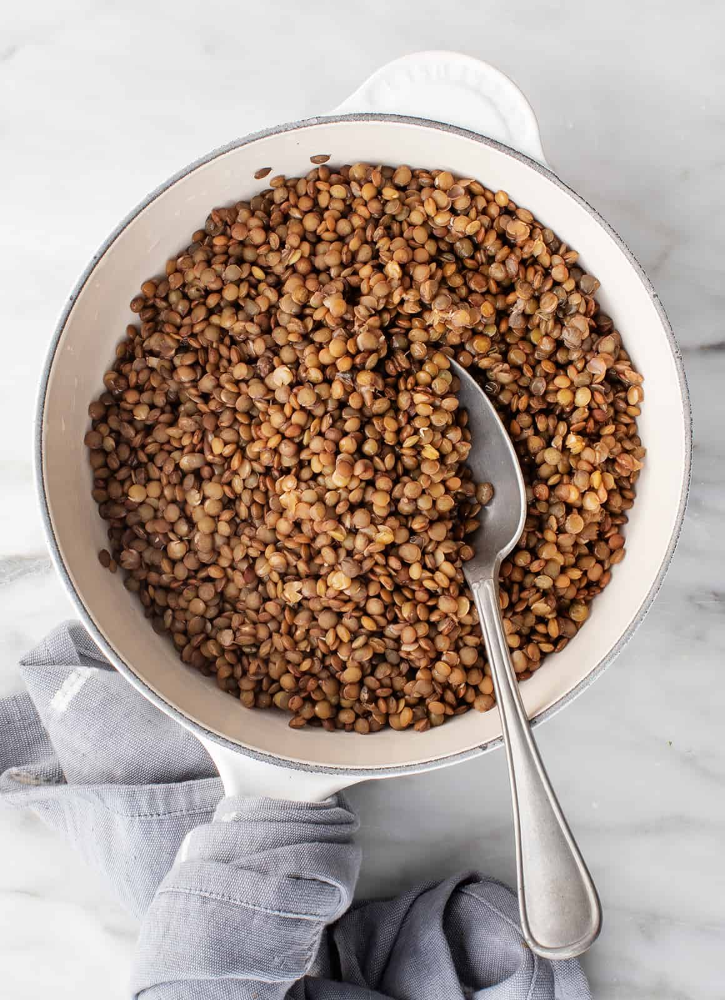

Perfect Lentils Every Time!

Description
These lentils are a staple in my house!
They pair perfectly with tofu, tempeh, seitan,
or any other plant based proteins! Lentils are
also great for hitting your macro protein goals!
Unlike other carbs lentils have plenty of protein!
Ingredients You'll Need:
- 2 Cups Lentils
- 5 Cups Water
- Salt
Steps To Make The Dish:
- Get 2 cups of lentils
- Get 5 cups of water
- Put the lentils and water in your instapot
- Cook for 10 minutes
- Let sit for 15 minutes with the lid on
- Release the pressure
- Season with salt to taste
- Enjoy!